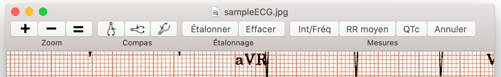
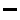

Introduction
Compas électroniques
L'application Compas EP offre des compas électroniques pour mesurer les intervalles sur les images des enregistrements électrocardiographiques ou électrophysiologiques. Dans le laboratoire d'électrophysiologie les compas électroniques font partie du système d'enregistrement informatisé. L'application Compas EP fournit les mêmes compas électroniques pour votre Mac. Les compas électroniques de Compas EP sont plus précis, plus faciles à utiliser, et moins dangereux que les compas mécaniques (ils n'ont pas de points tranchants!).
Commencement rapide
Quand le Compas EP commence, un échantillon d'ECG et un compas de temps sont chargés. Déplacer le compas en cliquant la barre transversale et en la faisant glisser avec la souris ou le trackpad. Élargir et contracter le compas en cliquant la barre verticale et en le glissant. Pincer et zoomer l'image de l'ECG ou utiliser les boutons de zoom pour l'agrandir ou le rétrécir selon votre besoin. Si l'ECG est plus grand que votre écran, vous pouvez le glisser avec vos doigts ou la souris afin de trouver un endroit pour mesurer. Le reste des instructions explique comment charger les images de l'ECG, ajouter et supprimer les compas, les étalonner, et rendre les calculs avancés comme l'intervalle QT corrigé.
Barres d’outils
L’application est contrôlée par les boutons de la barre d’outils en haut de la fênetre ou par le menu en haut de l’écran. La barre d’outils ressemble ça:

Figure 1: Barre d’outils
Noter que tous les boutons de la barre d'outils ne seront pas disponibles en permanence, selon que l'étalonnage a été effectué. Certains éléments de la barre d'outils sont désactivés en mode fenêtre transparente également. Les boutons désactivés sont "grisés". On peut personnaliser la barre d'outils. Sur nouveaux Macs certaines fonctions sont disponibles sur la Touch Bar.
Zoom toolbar
- Zoom avant
-  Zoom arrière
- Zoom à dimension réelle
Calipers toolbar
- Ajouter un compas de temps
- Ajouter un compas d’amplitude
- Ajouter un compas d’angle
- Étalonner Étalonner un compas
- Effacer Effacer tout l’étalonnage
Measurement toolbar
- Int/Fréq Alterner l’intervalle et la fréquence cardiaque
- RR moyen Calculer la fréquence cardiaque moyenne et l’intervalle moyen
- QTc Calculer le QTc corrigé
Menus
Presque toutes les fonctions de l’application sont contenues dans les commandes du menu principal en haut de l’écran. Noter qu’il existe des raccourcis clavier dans le menu pour plusieurs fonctions du programme. Par exemple, il est plus facile de faire tourner une image à l’aide d’une touche de raccourci clavier qu’en utilisant d’une commande de menu. Comme pour les barres d’outils, certaines commandes de menu sont désactivées lorsque leur utilisation n’est pas autorisée. Par exemple, la rotation de l’image n’est pas autorisée après étalonnage des compas. Il est nécessaire d’effacer l’étalonnage pour restaurer les commandes de rotation.
Raccourcis clavier
| Touche | Fonction |
|---|---|
| ⇧⌃R | Tourner l’image 90° à doite |
| ⇧⌃L | Tourner l’image 90° à gauche |
| ⌃R | Tourner l’image 1° à droite |
| ⌃L | Tourner l’image 1° à gauche |
| ⌘R | Tourner l’image 0,1 à droite |
| ⌘L | Tourner l’image 0,1 à gauche |
| ⌃0 | Réinitialiser la rotation |
| ⌘+ | Zoom avant |
| ⌘- | Zoom arrière |
| ⌘= | Zoom à dimension réelle |
| ⌃E | Éditeur d’image |
| ⌃H | Basculer la fenêtre transparente |
| ⌃T | Ajouter un compas de temps |
| ⌃A | Ajouter un compas d’amplitude |
| ⌃G | Ajouter un compas d’angle |
| ⌃C | Étalonner |
| Del | Supprimer le compas choisi |
| ⌘Del | Supprimer tous les compas |
| ^P | Page précédente de multipage PDF |
| ^N | Page suivante de multipage PDF |
| ⌥⌘G | Aller à la page PDF |
| ← | Régler le composant vers la gauche |
| → | Régler le composant vers la droite |
| ↑ | Régler le composant vers le haut |
| ↓ | Régler le composant vers le bas |
| ⌘← | Régler le composant finement vers la gauche |
| ⌘→ | Régler le composant finement vers la droite |
| ⌘↑ | Régler le composant finement vers le haut |
| ⌘↓ | Régler le composant finement vers le bas |
| ⌘, | Ouvrir les préférences |
| ⌘O | Ouvrir un fichier |
| ⌘N | Nouvelle fenêtre |